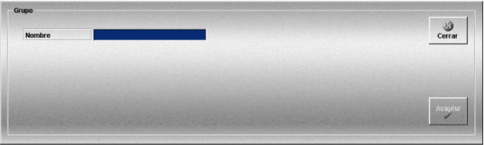

Grupos de Unidades
Esta ventana permite crear grupos de unidades que sólo requieren un nombre, ya que se crean sin ninguna unidad asociada.

Al pulsar el botón Unidades en el Área de Preparación de Ejercicios, además de las unidades se muestran también los grupos creados.
Se pueden añadir unidades a cada grupo arrastrándolas hasta el grupo desde la misma ventana de Preparación de Ejercicios, o bien seleccionando el grupo y añadiendo unidades desde la ventana de Preparación de Modelos mediante el botón Añadir.
Los grupos de unidades se utilizan para poder añadir, de una sola vez, varias unidades a un ejercicio.